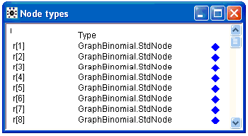
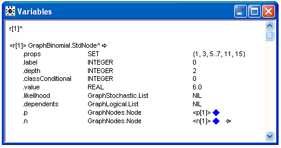
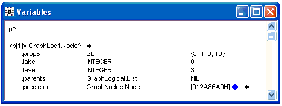
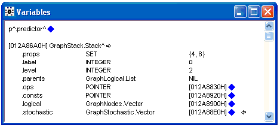
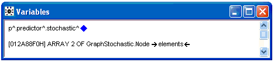
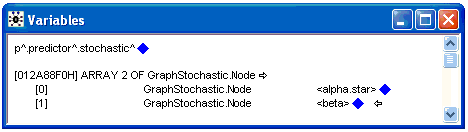
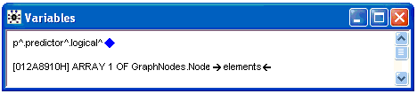
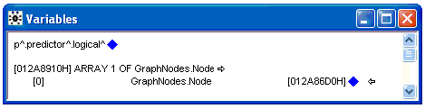
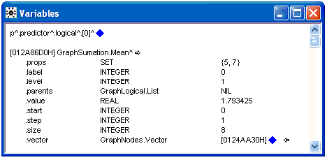
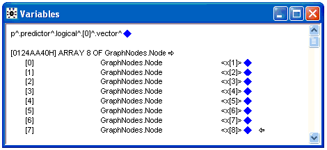

Blue Diamonds
I like blue diamonds, maybe you also like blue diamonds? Your version of OpenBUGS (WinBUGS to be more precise) can now have new improved blue diamonds. A modified version of the module DevDebug has been written. The Node Info tool will now give you blue diamonds so that you can explore Graph and Updater objects. The blue diamonds allow complex graphical model build by OpenBUGS to be explored in detail. Where possible hexidecimal numbers that represent nodes in the graph data structure are replaced by their name in the BUGS language model. All addresses that represent nodes in the graphical model are displayed between angled brakets (<>). Adding the DevDebug module to OpenBUGS will also give more informative trap messages when things go wrong. However if module BugsTraphandler is present traps will be replaced by simple error messages (with no garantee that things are cleaned up)
As a simple example of blue diamonds in action compile and initialize the Beetles model. Then select the "Node info" tool from the Info menu and type r in the dialog box and click on the node button. You should see a window containing

Next click on the blue diamond opposite r[1] to get information about node r[1] in the Beetles model, you will get another window containing

The r[1] node has several field amongst them p[1] and n[1]. More information about p[1] can be gained by clicking on its blue diamond. You will get another window containing

So the p[1] is of type GraphLogit.Node, the logistic node. It has several fields including the predictor field which can be explored by clicking on its blue diamond. Doing this opens a window containg

So the predictor node is of type GraphStack.Stack. You can explore this further by clicking on its blue diamonds. For example clicking on the diamond next to stochastic field will open a window containing

The stochastic field is a two component vector. Click on one of the balck arrows to see its components

By clicking on the first blue diamond in the window you can go back one level, do this then click on the blue diamond next to the logical field

The logical field is a one component vector, clicking on one of the black arrows gives

This window does not seem very informative but clicking on the lower blue diamond is more interesting

The first (and only) component of the logical field is of type GraphSumation.Mean, the mean type node. But what is it a mean of? Click the lower blue diamond

It is the mean of the x vector!
We have explored in some detail the part of the graphical model that corresponds to the two lines on BUGS language code
r[i] ~ dbin(p[i],n[i])
logit(p[i]) <- alpha.star + beta * (x[i] - mean(x[]))
Happy clicking!